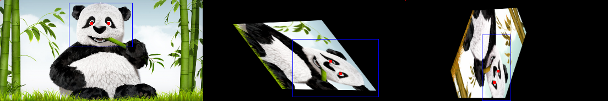

Augmentation Containers¶
The classes in this section are containers for augmenting different data formats (e.g. images, videos).
Augmentation Sequential¶
Kornia augmentations provides simple on-device augmentation framework with the support of various syntax sugars (e.g. return transformation matrix, inverse geometric transform). Therefore, we provide advanced augmentation container to ease the pain of building augmenation pipelines. This API would also provide predefined routines for automating the processing of masks, bounding boxes, and keypoints.
- class kornia.augmentation.container.AugmentationSequential(*args, data_keys=(DataKey.INPUT,), same_on_batch=None, keepdim=None, random_apply=False, random_apply_weights=None, transformation_matrix_mode='silent', extra_args=None)¶
AugmentationSequential for handling multiple input types like inputs, masks, keypoints at once.
- Parameters:
*args (
Union[_AugmentationBase,ImageSequential]) – a list of kornia augmentation modules.data_keys (
Union[Sequence[str],Sequence[int],Sequence[DataKey],None], optional) – the input type sequential for applying augmentations. Accepts “input”, “image”, “mask”, “bbox”, “bbox_xyxy”, “bbox_xywh”, “keypoints”, “class”, “label”. Default:(DataKey.INPUT,)same_on_batch (
Optional[bool], optional) – apply the same transformation across the batch. If None, it will not overwrite the function-wise settings. Default:Nonekeepdim (
Optional[bool], optional) – whether to keep the output shape the same as input (True) or broadcast it to the batch form (False). If None, it will not overwrite the function-wise settings. Default:Nonerandom_apply (
Union[int,bool,Tuple[int,int]], optional) – randomly select a sublist (order agnostic) of args to apply transformation. If int, a fixed number of transformations will be selected. If (a,), x number of transformations (a <= x <= len(args)) will be selected. If (a, b), x number of transformations (a <= x <= b) will be selected. If True, the whole list of args will be processed as a sequence in a random order. If False, the whole list of args will be processed as a sequence in original order. Default:Falsetransformation_matrix_mode (
str, optional) – computation mode for the chained transformation matrix, via .transform_matrix attribute. If silent, transformation matrix will be computed silently and the non-rigid modules will be ignored as identity transformations. If rigid, transformation matrix will be computed silently and the non-rigid modules will trigger errors. If skip, transformation matrix will be totally ignored. Default:"silent"extra_args (
Optional[Dict[DataKey,Dict[str,Any]]], optional) – to control the behaviour for each datakeys. By default, masks are handled by nearest interpolation strategies. Default:None
Note
Mix augmentations (e.g. RandomMixUp, RandomCutMix) can only be working with “input”/”image” data key. It is not clear how to deal with the conversions of masks, bounding boxes and keypoints.
Note
See a working example here.
Examples
>>> import kornia >>> input = torch.randn(2, 3, 5, 6) >>> mask = torch.ones(2, 3, 5, 6) >>> bbox = torch.tensor([[ ... [1., 1.], ... [2., 1.], ... [2., 2.], ... [1., 2.], ... ]]).expand(2, 1, -1, -1) >>> points = torch.tensor([[[1., 1.]]]).expand(2, -1, -1) >>> aug_list = AugmentationSequential( ... kornia.augmentation.ColorJiggle(0.1, 0.1, 0.1, 0.1, p=1.0), ... kornia.augmentation.RandomAffine(360, p=1.0), ... data_keys=["input", "mask", "bbox", "keypoints"], ... same_on_batch=False, ... random_apply=10, ... ) >>> out = aug_list(input, mask, bbox, points) >>> [o.shape for o in out] [torch.Size([2, 3, 5, 6]), torch.Size([2, 3, 5, 6]), torch.Size([2, 1, 4, 2]), torch.Size([2, 1, 2])] >>> # apply the exact augmentation again. >>> out_rep = aug_list(input, mask, bbox, points, params=aug_list._params) >>> [(o == o_rep).all() for o, o_rep in zip(out, out_rep)] [tensor(True), tensor(True), tensor(True), tensor(True)] >>> # inverse the augmentations >>> out_inv = aug_list.inverse(*out) >>> [o.shape for o in out_inv] [torch.Size([2, 3, 5, 6]), torch.Size([2, 3, 5, 6]), torch.Size([2, 1, 4, 2]), torch.Size([2, 1, 2])]
This example demonstrates the integration of VideoSequential and AugmentationSequential.
>>> import kornia >>> input = torch.randn(2, 3, 5, 6)[None] >>> mask = torch.ones(2, 3, 5, 6)[None] >>> bbox = torch.tensor([[ ... [1., 1.], ... [2., 1.], ... [2., 2.], ... [1., 2.], ... ]]).expand(2, 1, -1, -1)[None] >>> points = torch.tensor([[[1., 1.]]]).expand(2, -1, -1)[None] >>> aug_list = AugmentationSequential( ... VideoSequential( ... kornia.augmentation.ColorJiggle(0.1, 0.1, 0.1, 0.1, p=1.0), ... kornia.augmentation.RandomAffine(360, p=1.0), ... ), ... data_keys=["input", "mask", "bbox", "keypoints"] ... ) >>> out = aug_list(input, mask, bbox, points) >>> [o.shape for o in out] [torch.Size([1, 2, 3, 5, 6]), torch.Size([1, 2, 3, 5, 6]), ...([1, 2, 1, 4, 2]), torch.Size([1, 2, 1, 2])]
Perform
OneOftransformation withrandom_apply=1andrandom_apply_weightsinAugmentationSequential.>>> import kornia >>> input = torch.randn(2, 3, 5, 6)[None] >>> mask = torch.ones(2, 3, 5, 6)[None] >>> bbox = torch.tensor([[ ... [1., 1.], ... [2., 1.], ... [2., 2.], ... [1., 2.], ... ]]).expand(2, 1, -1, -1)[None] >>> points = torch.tensor([[[1., 1.]]]).expand(2, -1, -1)[None] >>> aug_list = AugmentationSequential( ... VideoSequential( ... kornia.augmentation.RandomAffine(360, p=1.0), ... ), ... VideoSequential( ... kornia.augmentation.ColorJiggle(0.1, 0.1, 0.1, 0.1, p=1.0), ... ), ... data_keys=["input", "mask", "bbox", "keypoints"], ... random_apply=1, ... random_apply_weights=[0.5, 0.3] ... ) >>> out = aug_list(input, mask, bbox, points) >>> [o.shape for o in out] [torch.Size([1, 2, 3, 5, 6]), torch.Size([1, 2, 3, 5, 6]), ...([1, 2, 1, 4, 2]), torch.Size([1, 2, 1, 2])]
This example shows how to use a list of masks and boxes within AugmentationSequential
>>> import kornia.augmentation as K >>> input = torch.randn(2, 3, 256, 256) >>> mask = [torch.ones(1, 3, 256, 256), torch.ones(1, 2, 256, 256)] >>> bbox = [ ... torch.tensor([[28.0, 53.0, 143.0, 164.0], [254.0, 158.0, 364.0, 290.0], [307.0, 204.0, 413.0, 350.0]]), ... torch.tensor([[254.0, 158.0, 364.0, 290.0], [307.0, 204.0, 413.0, 350.0]]) ... ] >>> bbox = [Boxes.from_tensor(i).data for i in bbox]
>>> aug_list = K.AugmentationSequential( ... K.ColorJiggle(0.1, 0.1, 0.1, 0.1, p=1.0), ... K.RandomHorizontalFlip(p=1.0), ... K.ImageSequential(K.RandomHorizontalFlip(p=1.0)), ... K.ImageSequential(K.ColorJiggle(0.1, 0.1, 0.1, 0.1, p=1.0)), ... data_keys=["input", "mask", "bbox"], ... same_on_batch=False, ... random_apply=10, ... ) >>> out = aug_list(input, mask, bbox)
How to use a dictionary as input with AugmentationSequential? The dictionary keys that start with one of the available datakeys will be augmented accordingly. Otherwise, the dictionary item is passed without any augmentation.
>>> import kornia.augmentation as K >>> img = torch.randn(1, 3, 256, 256) >>> mask = [torch.ones(1, 3, 256, 256), torch.ones(1, 2, 256, 256)] >>> bbox = [ ... torch.tensor([[28.0, 53.0, 143.0, 164.0], [254.0, 158.0, 364.0, 290.0], [307.0, 204.0, 413.0, 350.0]]), ... torch.tensor([[254.0, 158.0, 364.0, 290.0], [307.0, 204.0, 413.0, 350.0]]) ... ] >>> bbox = [Boxes.from_tensor(i).data for i in bbox] >>> aug_dict = K.AugmentationSequential( ... K.ColorJiggle(0.1, 0.1, 0.1, 0.1, p=1.0), ... K.RandomHorizontalFlip(p=1.0), ... K.ImageSequential(K.RandomHorizontalFlip(p=1.0)), ... K.ImageSequential(K.ColorJiggle(0.1, 0.1, 0.1, 0.1, p=1.0)), ... data_keys=None, ... same_on_batch=False, ... random_apply=10, ... ) >>> data = {'image': img, 'mask': mask[0], 'mask-b': mask[1], 'bbox': bbox[0], 'bbox-other':bbox[1]} >>> out = aug_dict(data) >>> out.keys() dict_keys(['image', 'mask', 'mask-b', 'bbox', 'bbox-other'])
- forward(*args, params=None, data_keys=None)¶
Compute multiple tensors simultaneously according to
self.data_keys.
- inverse(*args, params=None, data_keys=None)¶
Reverse the transformation applied.
Number of input tensors must align with the number of``data_keys``. If
data_keysis not set, useself.data_keysby default.
Augmentation Dispatchers¶
Kornia supports two types of augmentation dispatching, namely many-to-many and many-to-one. The former wraps different augmentations into one group and allows user to input multiple inputs in align with the number of augmentations. The latter aims at performing different augmentations for one input that to obtain a list of various transformed data.
- class kornia.augmentation.container.ManyToManyAugmentationDispather(*augmentations)¶
Dispatches different augmentations to different inputs element-wisely.
- Parameters:
augmentations (
AugmentationSequential) – a list or a sequence of kornia AugmentationSequential modules.
Examples
>>> import torch >>> input_1, input_2 = torch.randn(2, 3, 5, 6), torch.randn(2, 3, 5, 6) >>> mask_1, mask_2 = torch.ones(2, 3, 5, 6), torch.ones(2, 3, 5, 6) >>> aug_list = ManyToManyAugmentationDispather( ... AugmentationSequential( ... kornia.augmentation.ColorJiggle(0.1, 0.1, 0.1, 0.1, p=1.0), ... kornia.augmentation.RandomAffine(360, p=1.0), ... data_keys=["input", "mask",], ... ), ... AugmentationSequential( ... kornia.augmentation.ColorJiggle(0.1, 0.1, 0.1, 0.1, p=1.0), ... kornia.augmentation.RandomAffine(360, p=1.0), ... data_keys=["input", "mask",], ... ) ... ) >>> output = aug_list((input_1, mask_1), (input_2, mask_2))
- forward(*input)¶
Define the computation performed at every call.
Should be overridden by all subclasses. :rtype:
Union[List[Tensor],List[Tuple[Tensor]]]Note
Although the recipe for forward pass needs to be defined within this function, one should call the
Moduleinstance afterwards instead of this since the former takes care of running the registered hooks while the latter silently ignores them.
- class kornia.augmentation.container.ManyToOneAugmentationDispather(*augmentations, strict=True)¶
Dispatches different augmentations to a single input and returns a list.
Same datakeys must be applied across different augmentations. By default, with input (image, mask), the augmentations must not mess it as (mask, image) to avoid unexpected errors. This check can be cancelled with strict=False if needed.
- Parameters:
augmentations (
AugmentationSequential) – a list or a sequence of kornia AugmentationSequential modules.
Examples
>>> import torch >>> input = torch.randn(2, 3, 5, 6) >>> mask = torch.ones(2, 3, 5, 6) >>> aug_list = ManyToOneAugmentationDispather( ... AugmentationSequential( ... kornia.augmentation.ColorJiggle(0.1, 0.1, 0.1, 0.1, p=1.0), ... kornia.augmentation.RandomAffine(360, p=1.0), ... data_keys=["input", "mask",], ... ), ... AugmentationSequential( ... kornia.augmentation.ColorJiggle(0.1, 0.1, 0.1, 0.1, p=1.0), ... kornia.augmentation.RandomAffine(360, p=1.0), ... data_keys=["input", "mask",], ... ) ... ) >>> output = aug_list(input, mask)
- forward(*input)¶
Define the computation performed at every call.
Should be overridden by all subclasses. :rtype:
Union[List[Tensor],List[Tuple[Tensor]]]Note
Although the recipe for forward pass needs to be defined within this function, one should call the
Moduleinstance afterwards instead of this since the former takes care of running the registered hooks while the latter silently ignores them.
ImageSequential¶
Kornia augmentations provides simple on-device augmentation framework with the support of various syntax sugars (e.g. return transformation matrix, inverse geometric transform). Additionally, ImageSequential supports the mix usage of both image processing and augmentation modules.
- class kornia.augmentation.container.ImageSequential(*args, same_on_batch=None, keepdim=None, random_apply=False, random_apply_weights=None, if_unsupported_ops='raise', disable_item_features=True, disable_sequential_features=False)¶
Sequential for creating kornia image processing pipeline.
- Parameters:
*args (
Module) – a list of kornia augmentation and image operation modules.same_on_batch (
Optional[bool], optional) – apply the same transformation across the batch. If None, it will not overwrite the function-wise settings. Default:Nonekeepdim (
Optional[bool], optional) – whether to keep the output shape the same as input (True) or broadcast it to the batch form (False). If None, it will not overwrite the function-wise settings. Default:Nonerandom_apply (
Union[int,bool,Tuple[int,int]], optional) – randomly select a sublist (order agnostic) of args to apply transformation. The selection probability aligns to therandom_apply_weights. If int, a fixed number of transformations will be selected. If (a,), x number of transformations (a <= x <= len(args)) will be selected. If (a, b), x number of transformations (a <= x <= b) will be selected. If True, the whole list of args will be processed as a sequence in a random order. If False, the whole list of args will be processed as a sequence in original order. Default:Falserandom_apply_weights (
Optional[List[float]], optional) – a list of selection weights for each operation. The length shall be as same as the number of operations. By default, operations are sampled uniformly. Default:None
Note
Transformation matrix returned only considers the transformation applied in
kornia.augmentationmodule. Those transformations inkornia.geometrywill not be taken into account.Examples
>>> _ = torch.manual_seed(77) >>> import kornia >>> input = torch.randn(2, 3, 5, 6) >>> aug_list = ImageSequential( ... kornia.color.BgrToRgb(), ... kornia.augmentation.ColorJiggle(0.1, 0.1, 0.1, 0.1, p=1.0), ... kornia.filters.MedianBlur((3, 3)), ... kornia.augmentation.RandomAffine(360, p=1.0), ... kornia.enhance.Invert(), ... kornia.augmentation.RandomMixUpV2(p=1.0), ... same_on_batch=True, ... random_apply=10, ... ) >>> out = aug_list(input) >>> out.shape torch.Size([2, 3, 5, 6])
Reproduce with provided params. >>> out2 = aug_list(input, params=aug_list._params) >>> torch.equal(out, out2) True
Perform
OneOftransformation withrandom_apply=1andrandom_apply_weightsinImageSequential.>>> import kornia >>> input = torch.randn(2, 3, 5, 6) >>> aug_list = ImageSequential( ... kornia.color.BgrToRgb(), ... kornia.augmentation.ColorJiggle(0.1, 0.1, 0.1, 0.1, p=1.0), ... kornia.filters.MedianBlur((3, 3)), ... kornia.augmentation.RandomAffine(360, p=1.0), ... random_apply=1, ... random_apply_weights=[0.5, 0.3, 0.2, 0.5] ... ) >>> out= aug_list(input) >>> out.shape torch.Size([2, 3, 5, 6])
- forward(input, params=None, extra_args=None)¶
Define the computation performed at every call.
Should be overridden by all subclasses. :rtype:
TensorNote
Although the recipe for forward pass needs to be defined within this function, one should call the
Moduleinstance afterwards instead of this since the former takes care of running the registered hooks while the latter silently ignores them.
PatchSequential¶
- class kornia.augmentation.container.PatchSequential(*args, grid_size=(4, 4), padding='same', same_on_batch=None, keepdim=None, patchwise_apply=True, random_apply=False, random_apply_weights=None)¶
Container for performing patch-level image data augmentation.

PatchSequential breaks input images into patches by a given grid size, which will be resembled back afterwards.
Different image processing and augmentation methods will be performed on each patch region as in [LYFC21].
- Parameters:
*args (
Module) – a list of processing modules.grid_size (
Tuple[int,int], optional) – controls the grid board separation. Default:(4, 4)padding (
str, optional) – same or valid padding. If same padding, it will pad to include all pixels if the input tensor cannot be divisible by grid_size. If valid padding, the redundant border will be removed. Default:"same"same_on_batch (
Optional[bool], optional) – apply the same transformation across the batch. If None, it will not overwrite the function-wise settings. Default:Nonekeepdim (
Optional[bool], optional) – whether to keep the output shape the same as input (True) or broadcast it to the batch form (False). If None, it will not overwrite the function-wise settings. Default:Nonepatchwise_apply (
bool, optional) – apply image processing args will be applied patch-wisely. ifTrue, the number of args must be equal to grid number. ifFalse, the image processing args will be applied as a sequence to all patches. Default:Truerandom_apply (
Union[int,bool,Tuple[int,int]], optional) – randomly select a sublist (order agnostic) of args to apply transformation. Ifint(batchwise mode only), a fixed number of transformations will be selected. If(a,)(batchwise mode only), x number of transformations (a <= x <= len(args)) will be selected. If(a, b)(batchwise mode only), x number of transformations (a <= x <= b) will be selected. IfTrue, the whole list of args will be processed in a random order. IfFalseand notpatchwise_apply, the whole list of args will be processed in original order. IfFalseandpatchwise_apply, the whole list of args will be processed in original order location-wisely. Default:False
Note
Transformation matrix returned only considers the transformation applied in
kornia.augmentationmodule. Those transformations inkornia.geometrywill not be taken into account.Note
See a working example here.
Examples
>>> import kornia.augmentation as K >>> input = torch.randn(2, 3, 224, 224) >>> seq = PatchSequential( ... ImageSequential( ... K.ColorJiggle(0.1, 0.1, 0.1, 0.1, p=0.5), ... K.RandomPerspective(0.2, p=0.5), ... K.RandomSolarize(0.1, 0.1, p=0.5), ... ), ... K.RandomAffine(360, p=1.0), ... ImageSequential( ... K.ColorJiggle(0.1, 0.1, 0.1, 0.1, p=0.5), ... K.RandomPerspective(0.2, p=0.5), ... K.RandomSolarize(0.1, 0.1, p=0.5), ... ), ... K.RandomSolarize(0.1, 0.1, p=0.1), ... grid_size=(2,2), ... patchwise_apply=True, ... same_on_batch=True, ... random_apply=False, ... ) >>> out = seq(input) >>> out.shape torch.Size([2, 3, 224, 224]) >>> out1 = seq(input, params=seq._params) >>> torch.equal(out, out1) True
Perform
OneOftransformation withrandom_apply=1andrandom_apply_weightsinPatchSequential.>>> import kornia >>> input = torch.randn(2, 3, 224, 224) >>> seq = PatchSequential( ... ImageSequential( ... K.ColorJiggle(0.1, 0.1, 0.1, 0.1, p=0.5), ... K.RandomPerspective(0.2, p=0.5), ... K.RandomSolarize(0.1, 0.1, p=0.5), ... ), ... K.RandomAffine(360, p=1.0), ... K.RandomSolarize(0.1, 0.1, p=0.1), ... grid_size=(2,2), ... patchwise_apply=False, ... random_apply=1, ... random_apply_weights=[0.5, 0.3, 0.8] ... ) >>> out = seq(input) >>> out.shape torch.Size([2, 3, 224, 224])
Video Data Augmentation¶
Video data is a special case of 3D volumetric data that contains both spatial and temporal information, which can be referred as 2.5D than 3D. In most applications, augmenting video data requires a static temporal dimension to have the same augmentations are performed for each frame. Thus, VideoSequential can be used to do such trick as same as nn.Sequential. Currently, VideoSequential supports data format like \((B, C, T, H, W)\) and \((B, T, C, H, W)\).
import kornia.augmentation as K
transform = K.VideoSequential(
K.RandomAffine(360),
K.ColorJiggle(0.2, 0.3, 0.2, 0.3),
data_format="BCTHW",
same_on_frame=True
)
- class kornia.augmentation.container.VideoSequential(*args, data_format='BTCHW', same_on_frame=True, random_apply=False, random_apply_weights=None)¶
VideoSequential for processing 5-dim video data like (B, T, C, H, W) and (B, C, T, H, W).
VideoSequential is used to replace nn.Sequential for processing video data augmentations. By default, VideoSequential enabled same_on_frame to make sure the same augmentations happen across temporal dimension. Meanwhile, it will not affect other augmentation behaviours like the settings on same_on_batch, etc.
- Parameters:
*args (
Module) – a list of augmentation module.data_format (
str, optional) – only BCTHW and BTCHW are supported. Default:"BTCHW"same_on_frame (
bool, optional) – apply the same transformation across the channel per frame. Default:Truerandom_apply (
Union[int,bool,Tuple[int,int]], optional) – randomly select a sublist (order agnostic) of args to apply transformation. If int, a fixed number of transformations will be selected. If (a,), x number of transformations (a <= x <= len(args)) will be selected. If (a, b), x number of transformations (a <= x <= b) will be selected. If None, the whole list of args will be processed as a sequence. Default:False
Note
Transformation matrix returned only considers the transformation applied in
kornia.augmentationmodule. Those transformations inkornia.geometrywill not be taken into account.Example
If set same_on_frame to True, we would expect the same augmentation has been applied to each timeframe.
>>> import kornia >>> input = torch.randn(2, 3, 1, 5, 6).repeat(1, 1, 4, 1, 1) >>> aug_list = VideoSequential( ... kornia.augmentation.ColorJiggle(0.1, 0.1, 0.1, 0.1, p=1.0), ... kornia.color.BgrToRgb(), ... kornia.augmentation.RandomAffine(360, p=1.0), ... random_apply=10, ... data_format="BCTHW", ... same_on_frame=True) >>> output = aug_list(input) >>> (output[0, :, 0] == output[0, :, 1]).all() tensor(True) >>> (output[0, :, 1] == output[0, :, 2]).all() tensor(True) >>> (output[0, :, 2] == output[0, :, 3]).all() tensor(True)
If set same_on_frame to False:
>>> aug_list = VideoSequential( ... kornia.augmentation.ColorJiggle(0.1, 0.1, 0.1, 0.1, p=1.0), ... kornia.augmentation.RandomAffine(360, p=1.0), ... kornia.augmentation.RandomMixUpV2(p=1.0), ... data_format="BCTHW", ... same_on_frame=False) >>> output = aug_list(input) >>> output.shape torch.Size([2, 3, 4, 5, 6]) >>> (output[0, :, 0] == output[0, :, 1]).all() tensor(False)
Reproduce with provided params. >>> out2 = aug_list(input, params=aug_list._params) >>> torch.equal(output, out2) True
Perform
OneOftransformation withrandom_apply=1andrandom_apply_weightsinVideoSequential.>>> import kornia >>> input, label = torch.randn(2, 3, 1, 5, 6).repeat(1, 1, 4, 1, 1), torch.tensor([0, 1]) >>> aug_list = VideoSequential( ... kornia.augmentation.ColorJiggle(0.1, 0.1, 0.1, 0.1, p=1.0), ... kornia.augmentation.RandomAffine(360, p=1.0), ... kornia.augmentation.RandomMixUpV2(p=1.0), ... data_format="BCTHW", ... same_on_frame=False, ... random_apply=1, ... random_apply_weights=[0.5, 0.3, 0.8] ... ) >>> out = aug_list(input) >>> out.shape torch.Size([2, 3, 4, 5, 6])